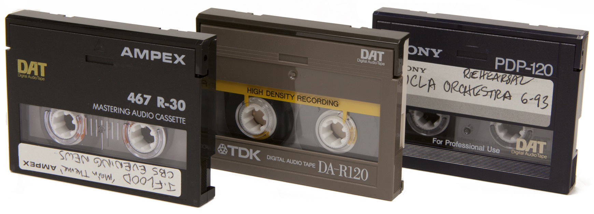
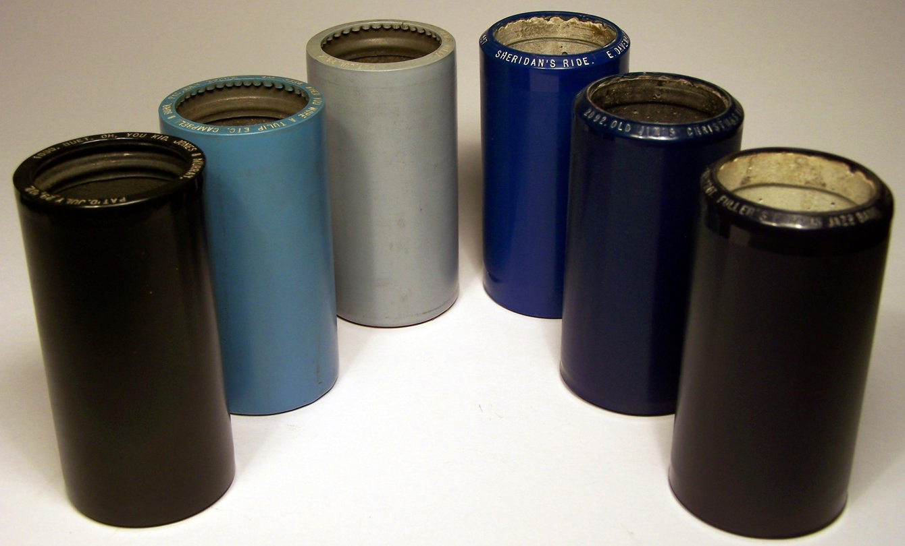
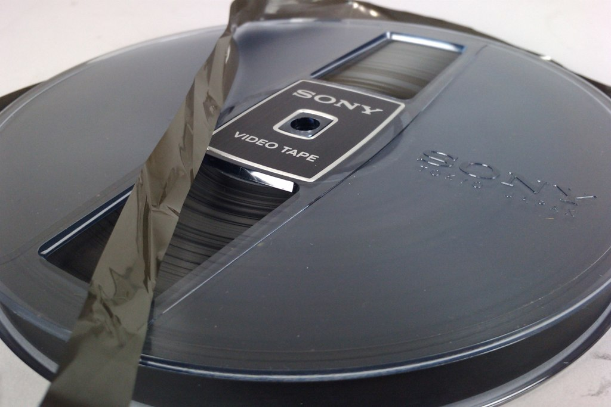

2" open reel audiotape. Image by Flickr user DRs Kulturarvsprojekt, available under a Creative Commons Attribution ShareAlike license (CC BY-SA 2.0). Courtesy of the Danish Broadcasting Corporation.
Base Material
Polyester or acetate magnetic tape
Identification
Tape width: 2"
Reel diameter: 3", 5", 7", 10.5", 14"
Preservation
Is susceptible to risks associated with age, hardware, and equipment obsolescence.
Is prone to risks like mold, binder deterioration, physical damage, signal drop-outs, and, in the case of acetate-based tapes, base deterioration.
Tapes are also prone to blocking or pinning, which occurs when layers of tape adhere to adjacent layers.
Issues for many polyester-based tapes are print-through, sticky shed syndrome (binder hydrolysis), and soft binder syndrome.
Vinegar syndrome is a concern for many acetate-based tapes.
Compact cassette. Image by Lori Dedeyan, available under a Creative Commons Attribution-NonCommercial-ShareAlike license (CC BY-NC-SA 2.0). Courtesy of UCLA Library Special Collections.
Base Material
Polyester magnetic tape
Identification
Tape width: approximately ⅛" (3.81mm)
Cassette: 4" × 2½" × ½"
Preservation
Magnetic tape is susceptible to physical, biological, and chemical risks like stretching, breaking, drop-outs, improper wind, mold, binder deterioration, and unintended recording.
Environmental conditions--especially heat, dust, and humidity--may also affect cassettes.
Is especially susceptible to damage from playback as it may jam in the playback deck and be "eaten," which can cause crimping and breaking during playback.
Microcassette (foreground) and compact cassette. Note the difference in scale. Image by Flickr user Malcohol, available under a Creative Commons Attribution ShareAlike license (CC BY-SA 3.0).
Base Material
Polyester magnetic tape
Identification
Tape width: approximately ⅛"
Cassette: 1 ⅞" × 1 ¼"
Preservation
Media and equipment obsolescence is a risk.
Environmental conditions--especially heat, dust, and humidity--may also affect cassettes.
Due to the relative fragility of the media, microcassettes have a projected lifespan of 2-10 years.

DAT cassettes. Image by Lori Dedeyan, available under a Creative Commons Attribution-NonCommercial-ShareAlike license (CC BY-NC-SA 2.0). Courtesy of UCLA Library Special Collections.
Base Material
Polyester magnetic tape
Identification
Tape width: 4mm
Cassette: 73mm × 54mm × 10.5mm
Preservation
Biggest risk is format and playback equipment obsolescence.
Environmental conditions--especially heat, dust, and humidity--may also affect cassettes.
DAT has known playback problems that are typically related to mechanical alignment.

Plastic cylinders. 4-minute plastic cylinders are found in a variety of shades. Those on the left are Indestructible brand; on the right are Edison Blue Amberols. Image courtesy of the Antique Phonograph Society.
Base Material
Molded cellulose nitrate cylinder
Identification
Variable, but typically about 2¼" (diameter) × 4–4¼" (length)
Preservation
Is susceptible to warpage, breakage, groove wear, and surface contamination.
Celluloid-based cylinders are prone to brittleness, and their cores (whether plaster or cardboard) are extremely fragile.
Cylinders of different diameters cannot be played on the same machine; and, attempting to do so will damage the cylinder.
9.5mm film strip. Three frames of cine film displaying the iconic central sprocket perforations. Image captured by Wikimedia Commons user Velela, available under a Creative Commons Attribution ShareAlike license (CC BY-SA 2.5). Film content available in the public domain.
16mm film (in a metal can). Image by Flickr user DRs Kulturarvsprojekt, available under a Creative Commons Attribution ShareAlike license (CC BY-SA 2.0). Courtesy of the Danish Broadcasting Corporation.
8mm color film. Note the oblong film sprocket perforations. Image by Flickr user Ian, available under a Creative Commons Attribution-NonCommercial license (CC BY-NC 2.0).
Super 8 film (detail). Note the square sprocket perforations. Image by Flickr user Edgar Vonk, available under a Creative Commons Attribution-NonCommercial-ShareAlike license (CC BY-NC-SA).
Laserdisc. Image by Lori Dedeyan, available under a Creative Commons Attribution-NonCommercial-ShareAlike license (CC BY-NC-SA 2.0). Courtesy of UCLA Library Special Collections.
Base Material
Acrylic disc
Identification
Approximately 12" (30.4cm) in diameter
Preservation
LaserDiscs are subject to mechanical and surface contaminants.
Discs may exhibit surface-crazing, a milky white, lattice, or spider web-like pattern.
Can suffer from laser rot, where the aluminum loses its reflectivity and the quality of the playback signal degrades.
Compact discs. Image by Lori Dedeyan, available under a Creative Commons Attribution-NonCommercial-ShareAlike license (CC BY-NC-SA 2.0). Courtesy of UCLA Library Special Collections.
Base Material
Polycarbonate plastic disc
CDR/CDRW may use dyes in surface layer
Identification
120mm (4.7") diameter; 1.2mm thick
Preservation
Surface scratches, gouges, and smudges can inhibit playback of the disc.
Disc rot can occur when aluminum layer oxidizes, leading to the loss of data.
Should be regularly checked for data degradation.
Should be stored in cool, dry, and dark conditions.
DVDs. Image by Lori Dedeyan, available under a Creative Commons Attribution-NonCommercial-ShareAlike license (CC BY-NC-SA 2.0). Courtesy of UCLA Library Special Collections.
Base Material
Polycarbonate plastic disc
DVDR and DVDRW may use dyes in surface layer
Identification
120mm (4.7") diameter; 1.2mm thick
Preservation
Surface scratches, gouges, and smudges can inhibit playback of the disc.
Should be stored in cool, dry, and dark conditions.
Shellac disc (with original fiberboard sleeve). Image by Flickr user DRs Kulturarvsprojekt, available under a Creative Commons Attribution ShareAlike license (CC BY-SA 2.0).
Base Material
Shellac-based disc
Identification
7"; 10"; 12"; 16" (diameter)
Preservation
Is susceptible to warpage, breakage, groove wear, and surface contamination.
Tend to become brittle with age and are susceptible to damage by mold and acidic substances.
When cleaning, DO NOT use fluids that contain alcohol as it can dissolve the shellac.
Original sleeves are not recommended for long-term storage and should be assumed to be acidic.
2" open reel videotape (with plastic case). Image by Flickr user DRs Kulturarvsprojekt, available under a Creative Commons Attribution ShareAlike license (CC BY-SA 2.0). Courtesy of the Danish Broadcasting Corporation.
Base Material
Polyester magnetic tape
Identification
Tape width: 2"
Reel: ~12" (diameter)
Container: 15" x 15" × 4"
Preservation
Spongy container liner can decay into a gummy substance that is difficult to clean off of the tape.
Is especially susceptible to risks associated with age, hardware, and equipment obsolescence.
Prone to risks common to other types of magnetic media, such as mold, binder deterioration, physical damage, and signal drop-outs.
Is especially vulnerable because the format is long obsolete and playback equipment is hard to find.
1" open reel videotape (with plastic case). Image by Flickr user DRs Kulturarvsprojekt, available under a Creative Commons Attribution ShareAlike license (CC BY-SA 2.0). Courtesy of the Danish Broadcasting Corporation.
Base Material
Polyester magnetic tape
Identification
Tape width: 1"
Preservation
May be misidentified as 1" audiotape.
Is especially susceptible to risks associated with age, hardware, and equipment obsolescence.
Prone to risks common to other types of magnetic media, such as mold, binder deterioration, physical damage, and signal drop-outs.

1/2" open reel videotape. Image by Flickr user windthoek, available under a Creative Commons Attribution NonCommercial ShareAlike license (CC BY-NC-SA 2.0).
U-matic cassette (with case). Image by Flickr user DRs Kulturarvsprojekt, available under a Creative Commons Attribution ShareAlike license (CC BY-SA 2.0). Courtesy of the Danish Broadcasting Corporation.
Betamax cassette (with slip case). Image by Lori Dedeyan, available under a Creative Commons Attribution-NonCommercial-ShareAlike license (CC BY-NC-SA 2.0). Courtesy of UCLA Library Special Collections.
Base Material
Polyester magnetic tape
Identification
Tape width: ½"
Cassette: 6⅛" × 3¾" × 1"
Preservation
Older tapes are susceptible to signal loss due to their age.
Is susceptible to damage from mold, binder deterioration, and other physical and biological issues.
VHS cassette (with original cardboard slip case). Image by Flickr user DRs Kulturarvsprojekt, available under a Creative Commons Attribution ShareAlike license (CC BY-SA 2.0). Courtesy of the Danish Broadcasting Corporation.
Base Material
Polyester magnetic tape
Identification
Tape width: ½" (12.7mm)
Cassette: 187mm × 103mm × 25mm
Preservation
Older VHS tapes are susceptible to signal loss due to age.
Is susceptible to damage from mold, binder deterioration, and other physical and biological issues.
Betacam SP cassette. Image by Lori Dedeyan, available under a Creative Commons Attribution-NonCommercial-ShareAlike license (CC BY-NC-SA 2.0). Courtesy of UCLA Library Special Collections.
Video8 cassette. Image by Lori Dedeyan, available under a Creative Commons Attribution-NonCommercial-ShareAlike license (CC BY-NC-SA 2.0). Courtesy of UCLA Library Special Collections.
Base Material
Polyester magnetic tape
Identification
Tape width: 8mm
Cassette: 3⅔" × 2⅜" × ½"
Preservation
Tape is prone to stretching.
Hi8 ME tapes are especially prone to durability problems.
Is susceptible to damage from mold, binder deterioration, and other physical and biological issues.
D-2 cassette (left) with DAT (foreground, right) for scale. Image by Flickr user DRs Kulturarvsprojekt, available under a Creative Commons Attribution ShareAlike license (CC BY-SA 2.0). Courtesy of the Danish Broadcasting Corporation.
D-3 with case. Image by Flickr user DRs Kulturarvsprojekt, available under a Creative Commons Attribution ShareAlike license (CC BY-SA 2.0). Courtesy of the Danish Broadcasting Corporation.
Base Material
Polyester magnetic tape
Identification
Tape width: ½"
Cassette: 8¼" × 4⅞" × 1"
Preservation
Is subject to the same concerns as analog tapes—stretching, breaking, drop-outs, mold, binder deterioration, and unintended recording.
Digital Betacam cassette. Image by Lori Dedeyan, available under a Creative Commons Attribution-NonCommercial-ShareAlike license (CC BY-NC-SA 2.0). Courtesy of UCLA Library Special Collections.
MiniDV cassettes. Image by Lori Dedeyan, available under a Creative Commons Attribution-NonCommercial-ShareAlike license (CC BY-NC-SA 2.0). Courtesy of UCLA Library Special Collections.
Base Material
Polyester magnetic tape
Identification
Tape width: ¼"
Cassette: 2½" × 1⅞" × ⅖"
Preservation
Is subject to the same physical issues as analog tapes—stretching, breaking, drop-outs, mold, binder deterioration, and unintended recording.
The format's thin tape makes size and durability also a concern.
DVCPro cassettes. Image by Flickr user DRs Kulturarvsprojekt, available under a Creative Commons Attribution ShareAlike license (CC BY-SA 2.0). Courtesy of the Danish Broadcasting Corporation.
Digital video (DV) cassettes, left to right: DVCAM (large), DVCPRO (medium), MiniDV. Image by Wikimedia Commons user Grm wnr, available under a Creative Commons Attribution-ShareAlike license (CC BY-SA 3.0).
Reel: 2 3/4" to 3 3/4" (diameter); 3/4" to 1 1/4" (thickness)
Preservation
Has most common issues with wire becoming tangled and/or broken.
Rust can impede signal retrieval or weaken the already thin wire and cause the wire to break during handling or playback.
Is subject to print-through damage, which occurs when the magnetized signal from one section of the wire migrates to lower sections and leaves a sonic imprint.